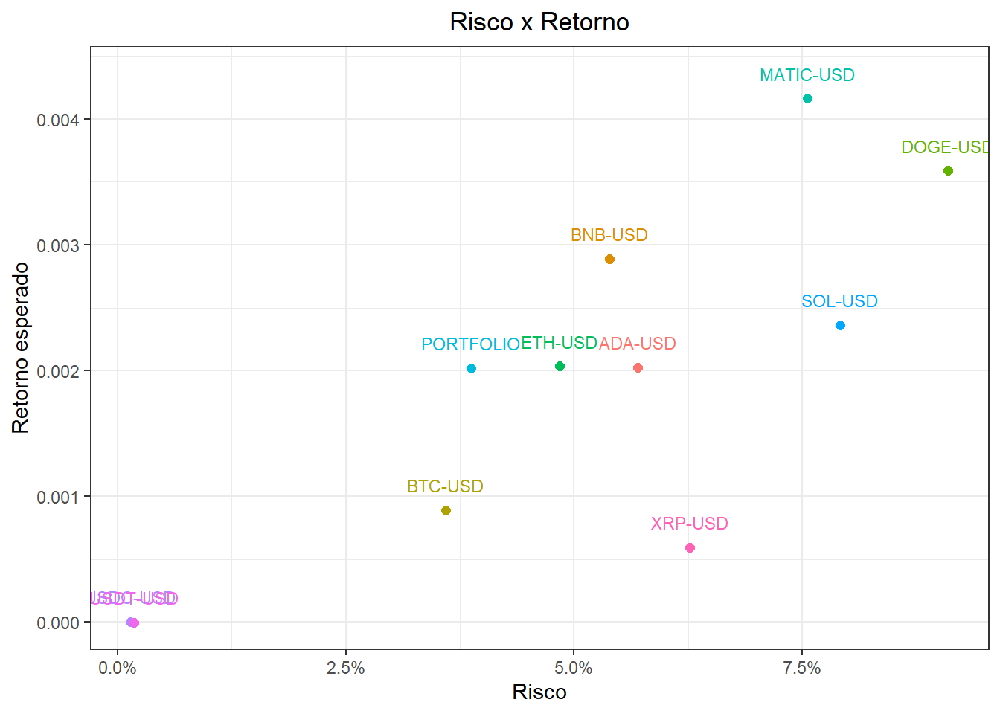
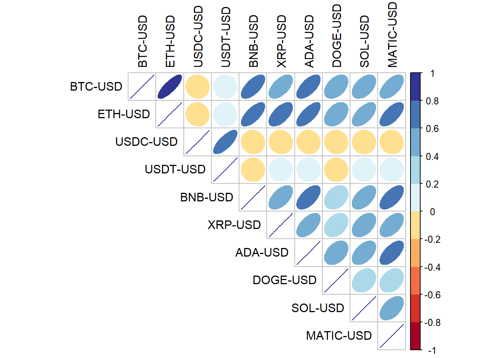
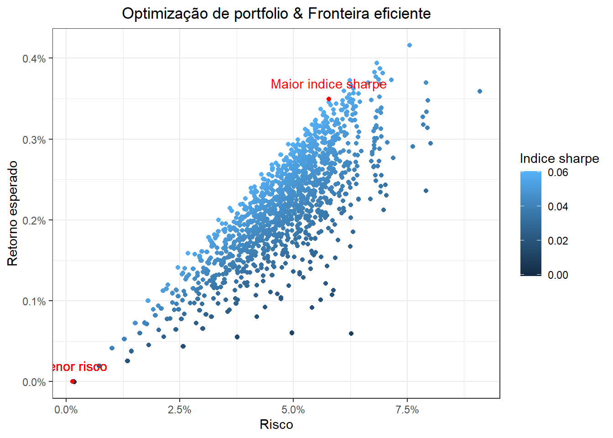
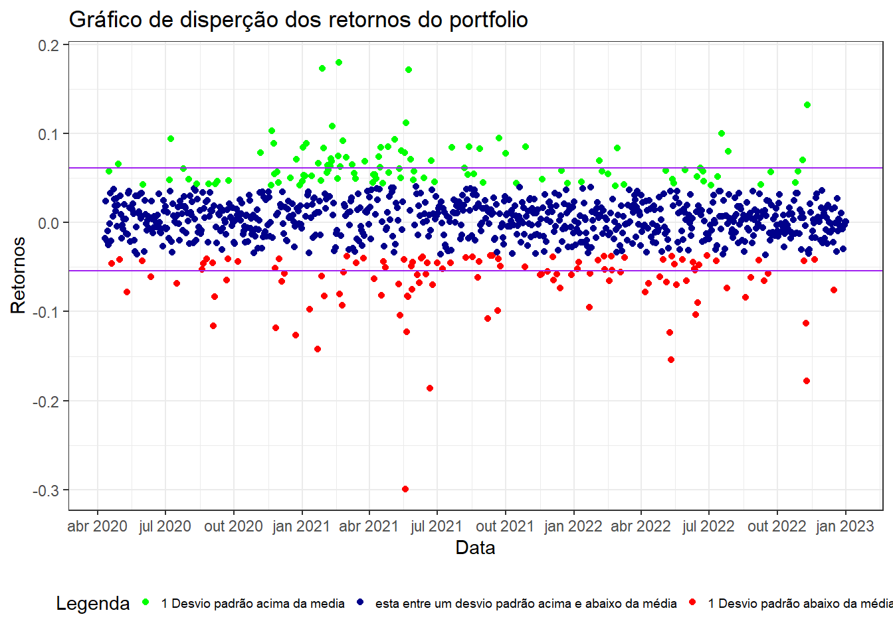
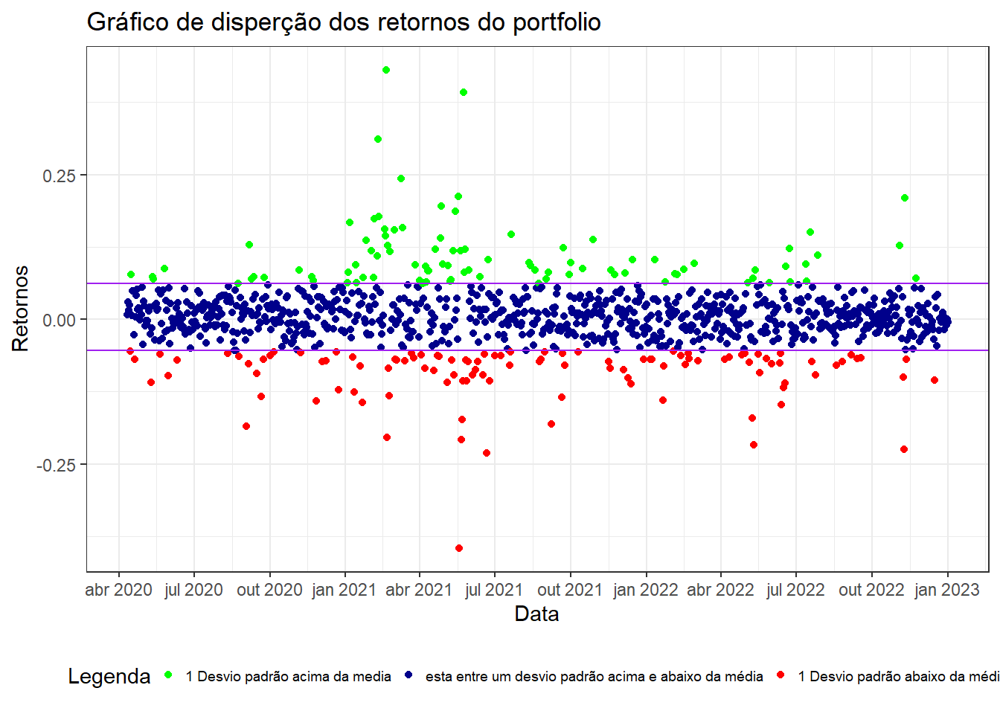

TCC
1 TEMA
Analise da aplicação da teoria moderna de portfolio sobre o mercado das criptomoedas
2 RESUMO
O mercado de criptomoeda tem se apresentado como alternativa aos ativos de renda variável, transformando assim novos modelos de negócios e formas de realizar transações, no entanto por ser algo recente ainda há poucos estudos utilizando a moderna teoria de portfólio de Markowitz aplicado a este setor, devido à alta instabilidade deste mercado apresenta tem por consequência o desejo em verificar a aplicação da moderna teoria de portfólio de Markowitz. Por isso essa pesquisa se caracteriza como uma pesquisa exploratória-quantitativa que usará como abordagem de revisão bibliográfica e análise de documentos.
Context: O mercado de criptomoeda tem se maturado como uma forte alternativa ao mercado de ações convencionais, transformando assim novos modelos de negócios e formas de realizar transações
Gap: no entanto por ser algo recente ainda há poucos estudos utilizando a moderna teoria de portfólio de Markowitz aplicado a este setor
Purpose: devido a alta instabilidade deste mercado apresenta tem por consequência o desejo em verificar a aplicação da moderna teoria de portfólio de Markowitz
Methodology: Por isso essa pesquisa se caracteriza como uma pesquisa exploratória-quantitativa que usará como abordagem de revisão bibliográfica e análise de documentos
Results:
3 INTRODUÇÃO
Este trabalho está dividido da seguinte maneira, na seção 3 desenvolvimentos, seção 4 resultados e na seção 5 a conclusão.
Na seção 3 é subdivido em 3.1 Criptmoeda; aonde se aborda os conceitos de criptomoeda, criptografia, blockchain, mineração e apresenta,os riscos, oportunidades e a diferença do mercado de ações tradicional para o de criptmoedas, 3.2 Moeda; é apresentado o conceito, suas funções e a classificação da criptmoeda, 3.3 Regulação; apresenta o contexto e a situação regulatória de cada país sobre o assunto e 3.4 Markowitz; o conceito
4 PROBLEMA DE PESQUISA
Qual o impacto da utilização da moderna teoria de portfólio sobre o mercado de cripto ativos dado a alta instabilidade do mesmo.
5 OBJETIVOS
5.1 GERAL
verificar o impacto da utilização da moderna teoria de portfólio sobre o mercado de criptoativos.
5.2 ESPECÍFICOS
- Conceituar criptoativos como ativos financeiros
- Diferenciar os criptoativos dos ativos financeiros usuais
- Analisar os impactos das regulações desse setor no Brasil
- Analisar se a alta instabilidade do setor afeta diretamente na utilização do método da moderna teoria de portfolio
- Comparar o resultado da utilização do método contra uma simples seleção de portifólio
6 METODOLOGIA
Esse trabalho teve por intenção realizar um estudo pra verificar a aplicabilidade do método da moderna teoria de portfólio ao setor das criptomoedas.
Portanto para alcançar ao objetivo traçado esta pesquisa se identifica em sua abordagem como quantitativa e possui natureza básica com objetivos exploratórios, usando o método dedutivo.
Tendo como fonte de pesquisa utilizada para o embasamento cientifico obtidas através das seguintes plataformas: Periódicos CAPES, Scopus e Google Acadêmico. As pesquisas foram limitadas em até 5 anos de diferença com restrição da linguagem em português e inglês.
Para realizar os cálculos foi utilizado a linguagem de programação R e os seguintes pacotes tidyverse (WICKHAM et al., 2019), scales (WICKHAM; SEIDEL, 2022), quantmod (RYAN; ULRICH, 2022), PerformanceAnalytics (PETERSON; CARL, 2020) e base (R CORE TEAM, 2022).
Os cálculos para a realização dos retornos mensais, retornos do portfólio e do índice Sharpe foram performados através das seguintes funções Return.calculate, Return.portfolio e SharpeRatio. Estas funções pertencem ao pacote PerformanceAnalytics.
Sendo a formula aplicada da função Return.Calculate
\[ R = log(r_{i,t}) - log(r_{i,t - 1}) \tag{1}\]
Onde:
\(_{i}\) = Ativo
\(_{t}\) = Período
\(r\) = Valor do ativo
\(R\) = Retorno
Sendo a formula aplicada da função Return.portfolio
\[ R_{p} = \sum_{t = 1}^{N}i_{t}w_{t} \tag{2}\]
Onde:
\(i_{t}\) = o ativo no período
\(w_{t}\) = Peso no período
\(R_{p}\) = Retorno do portfolio
Sendo a formula aplicada da função SharpeRatio
\[ sr = \frac{R_{p} - R_{f}}{\sigma_{p}} \tag{3}\]
Onde:
\(sr\) = Indice sharpe
\(R_{p}\) = Retorno do portfolio
\(R_{f}\) = Taxa livre de risco
\(\sigma_{p}\)= Desvio padrão do portfolio
A taxa livre de risco utilizada foi atrelada a taxa Selic, segundo o Banco Central do Brasil em nota emitida (“Copom mantém a taxa Selic em 13,75% a.a.”, 2023) a taxa é de 0,1375, ou seja 13,75%.
Para performar os cálculos das matrizes de covariância, correlação e a expectativa de retorno média foram utilizadas as funções cov, cor e mean respectivamente do pacote base Sendo a formula aplicada da função cov
\[ cov(x,y) = \frac{\sum_{i=1}^{n}(x_{i}-\overline{x})(y_{i}-\overline{y})}{n-1} \tag{4}\]
Onde:
\(x_{i}\) = valor de x
\(\overline{x}\) = média dos valores de x
\(y\_{i}\) = valor de y
\(\overline{y}\) = média dos valores de y
\(n\) = tamanho da amostra
Sendo a formula aplicada da função cor
\[ cor(x,y) = \frac{cov(x,y)}{\sigma_{x}\sigma{y}} \tag{5}\]
Onde:
\(cov(x,y)\) = o resultado da covariância de x e y
\(\sigma_{x}\)= o desvio padrão de x
\(\sigma_{y}\) = o desvio padrão de y
Sendo a formula aplicada da função mean
\[ E(R) = \frac{\sum x}{n} \tag{6}\]
x = os valores de x
n = tamanho da amostra
Para realizar a criação dos gráficos foi utilizado um conjunto de funções do pacote tidyverse sendo eles: ggplot, geom_point, theme_classic, scale_y_continuous, scale_x_continuous e labs.
Além dessa aplicação para a realização de gráficos o pacote do tidyverse também foi utilizado para realizar a transformação da tabela de um formato largo para o longo através da função pivot_longer, nesse processo também foi necessário a transformação do arquivo provindo do formato xts para o formato tidy usando a função as.data.frame e rownames_to_column.
Esses procedimentos de transformação dos dados foram aplicados para que pudesse ser feito o gráfico retorno esperado e risco de cada ativo. Para realizar as diversas combinações de pesos possíveis ao portfólio, foi usado a função expand.grid, do.call, rep, list, rowSums ,which, seq, length e setNames do pacote Base e as_tibble e reduce do pacote tidyverse.
É importante salientar que é variada por 0.2, ou seja 20%, os pesos em cada combinação respeitando que a somatória de todos os pesos da carteira deva ser igual a 1, sendo 1 igual a 100%, gerando assim um total de 2002 possíveis combinações com 10 ativos na carteira.
O motivo de varia as combinações em 0.2 se dá ao fato de restrições de memória já que para varia por exemplo em 0.1 seria necessário um memoria computacional maior que disposta no momento.
Para iterar sobre cada um dos pesos foi utilizado o FOR que é uma função de looping até que determinada condição seja satisfeita.
Os dados foram obtidos através da plataforma Yahoo Finance utilizando a função getSymbols do pacote quantmod, tendo o período analisado de 01/01/2020 até 01/01/2023.
Sendo os ativos selecionados: BTC-USD, ETH-USD, USDC-USD, USDT-USD, BNB-USD, XRP-USD, ADA-USD, DOGE-USD, SOL-USD, MATIC-USD. O critério utilizado pra fazer a seleção das criptomoedas foi as 10 maiores criptomoedas em relação a capitalização de mercado, sendo este dado extraído da plataforma do coinmarketcap.
7 DESENVOLVIMENTO
7.1 CRIPTOMOEDA
A categorização no qual as criptomoedas podem ser enxergadas variam entre pesquisadores.
O termo criptomoeda pode ser visto como parte mais abrangente de ativos financeiros, podendo ser categorizadas dentre os seguintes grupos: criptomoedas, títulos cripto e criptoativos de utilidade.(GIUDICI; MILNE; VINOGRADOV, 2020)
- Criptomoedas: ativos que atuam na blockchain para realizar trocas ou transferências entre os participantes da rede e, portanto, são usados como um meio de pagamento tendo ainda subdivisões entre moedas flutuantes, no qual a quantidade é fixada e o mercado determina seu preço tendo por exemplo o Bitcoin e o Ethereum, e as moedas estáveis, no qual o seu preço é fixo sendo esse determinado por uma instituição como por exemplo o Theter. (GIUDICI; MILNE; VINOGRADOV, 2020)
- Títulos cripto; são ativos que oferecem pagamentos futuros como por exemplo a participação nos lucros. (GIUDICI; MILNE; VINOGRADOV, 2020)
- Criptoativos de utilidade; são um meio de dar acesso ou resgate a um pré-lançamento de um produto ou serviço especifico. (GIUDICI; MILNE; VINOGRADOV, 2020)
já para (OZDURAK; UMUT; OZAY, 2022) elas podem ser classificadas em diversos grupos como instrumentos financeiros, valores mobiliários, commodities ou instrumento de pagamento.
Sendo ela assegurada através da tecnologia da criptografia ao invés de uma terceira entidade de confiança, para realizar transferências de propriedade e financeira. (GIUDICI; MILNE; VINOGRADOV, 2020)
Sendo seu mercado compreendido como um sistema complexo baseado em especulação portanto é gerador de condições instáveis e alguns vieses no qual os investidores possuem estratégias. (MNIF et al., 2020 APUD VOLOSOVYCH; SHEVCHENKO; SHOLOIKO, 2023)
Além disso ainda há divergências entre a possibilidade do bitcoin ser uma alternativa ao ouro Alguns pesquisadores afirmam, isso ocorre devido à falta de confiança na política monetária local enquanto outros afirmam que não se assemelha ao ouro e nem tem a capacidade de servir como um ativo porta seguro. (KLIBER et al., 2019)
O fato é que a sua adoção foi aumentada fortemente durante o período inflacionado da pandemia da covid-19. (OZDURAK; UMUT; OZAY, 2022)
Sendo que o mercado global de criptomoeda cresceu durante o período da pandemia da covid-19, em julho de 2016 seu valor era de $235,5 Bilhões, já em 2021 seu valor aumentou para $1,3 Trilhões. (COINMARKETCAP. 2021 APUD VOLOSOVYCH; SHEVCHENKO; SHOLOIKO, 2023)
Os impactos causados durante esse período moldaram o cenário atual das criptomoedas tendo como exemplo: a alta inflação, queda no produto interno bruto, distanciamento social e diversas restrições das quarenta impostas. (VOLOSOVYCH; SHEVCHENKO; SHOLOIKO, 2023)
7.2 CONTEXTUALIZAÇÂO
As criptomoedas, no geral, são observadas por diversos grupos da sociedade ao redor do mundo, sendo eles: investidores, financeiras, organizações governamentais, bancos centrais, legisladores, economistas, pesquisadores e etc. umas das explicações possíveis a esse fenômeno se dá ao fato do alto nível de liquidez como resultado de uma flexibilização monetária e pequenos rendimentos de ativos financeiros. (ARZOVA; OZDURAK, 2021)
Sendo o seu termo surgido com o advento da inovação tecnológica desenvolvida pelo pseudônimo Satoshi Nakamoto ao criar o BITCOIN com o intuito de ser um meio de troca, contrário as moedas tradicionais, a criptomoeda não se baseia na figura de uma autoridade central, mas sim na criptografia pra controlar e administrar-la. (KLIBER et al., 2019)
No qual a criação do bitcoin concretiza os desejos dos movimentos de grupos anarquistas, no qual via o instrumento da criptografia como um alternativa viável contra o controle e supervisão estatal por volta dos anos 1980 e 1990. (MATTOS; ABOUCHEDID; SILVA, 2020)
Tendo assim, o bitcoin e outras criptomoedas que surgiram com o tempo, características de uma moeda descentralizada que operam sob a blockchain, de forma que seja operada peer-to-peer ou seja de pessoa para pessoa sem a interferência de terceiras partes envolvidas como por exemplo bancos para a realização da validação de sua transação, dessa forma, a validação de cada transação é feita por computadores conectados à rede. (MATTOS; ABOUCHEDID; SILVA, 2020)
Portanto o bitcoin encerra um ciclo de tentativas afim de solucionar o problema de transicionamento de pagamentos sem terceiras partes envolvidas de tal modo que fossem transparentes, seguras e descentralizadas em uma rede de ponto a ponto. (NASCIMENTO; MIRA; BISON, 2022)
7.3 CRIPTOGRAFIA
Para garantir a segurança da rede e das transações nela feita é utilizado funções criptografadas denominadas hash, é um protocolo do consenso no qual fornece a validação entre nós anônimos sobre o status atual do histórico de transações armazenado em um livro-razão, comumente referido como blockchain. (SCHELLINGER, 2020)
Porém, vale a pena se ressaltar que o conceito da utilização de criptografia, dentro de um sistema de pagamento já havia sido elaborado em 1983 por David Chaum. (LETHO; CHELWA; ALHASSAN, 2022)
A ideia era proteger os dados do usuário de pagamentos eletrônicos de serem usados por terceiras partes, desde sua criação, envio e recebimento para isso ele propôs um sistema de pagamento irrastreável usando um sistema de assinatura cega, no qual consiste no uso de senha para encriptografar e descriptografar a informação, tendo o objetivo proibir terceiras partes envolvidas de rastrear os detalhes do pagamento, incluindo a hora, o beneficiário e o número de pagamentos efetuados. (LETHO; CHELWA; ALHASSAN, 2022)
Segundo (Kaspersky,2022) O conceito da criptografia é, no cenário de dinheiro digital, uma técnica que protege e preserva as informações da mensagem eletrônica, podendo ser visualizada para apenas o emissor e o receptor. De tal forma a palavra criptografia é uma derivação da palavra grega kryptos que significa objeto escondido (APUD NGWAKWE, 2022)
A criptografia funciona da seguinte forma; os textos são misturados transformando em um texto codificado e assim indecifrável, apenas o usuário destinatário final do texto poderá descodificar. (NGWAKWE, 2022) Há duas formas principais de criptografia aplicadas nas criptomoedas, sendo através da chave assimétrica e simétrica. (NGWAKWE, 2022)
Na chave assimétrica ela é composta por chave pública e privada, enquanto os dados são enviados pela publica o receptor da mensagem apenas poderá descriptografar os dados utilizando a chave privada. (NGWAKWE, 2022)
Na chave simétrica é gerada uma única chave secreta tanto para encriptografar quanto para descriptografar os dados, sendo compartilhada essa chave apenas aos envolvidos. (NGWAKWE, 2022)
Sendo a utilização da criptografia aplicada na blockchain através das funções hash, que seriam equações matemática. (GUO; YU, 2022)
Essas funções hashs tem por propriedades: o tamanho fixo, suscetibilidade, unidirecionalidade, resistência à colisão e alta sensibilidade (ZHAI et al., 2019)
O valor resultante dessa função é armazenado no cabeçalho do bloco junto com o hash do bloco anterior, sendo que através delas se torna possível fazer cálculos que comprovem a integridade na informação do bloco anterior. (ZHAI et al., 2019)
Por consequência, a falsificação do pertencimento da propriedade se torna impossível, devido a necessidade de alterar os dados anteriores da cadeia inteira, aonde é mantido na internet por muitos usuários, distribuído na blockchain, se tornando inimaginável (GIUDICI; MILNE; VINOGRADOV, 2020)
As chaves geradas através do processo de criptografia são normalmente administradas por carteiras digitais que tem por função armazenar as criptomoedas. (BIERNACKI; PLECHAWSKA-WÓJCIK, 2021)
7.4 CARTEIRA
A carteira digital possui duas funções sendo a primeira de ser uma ferramenta de administração de criptomoedas e a segunda de uma ferramenta de interação com a rede da blockchain. (BIERNACKI; PLECHAWSKA-WÓJCIK, 2021) Elas possuem um endereço alfanumérico gerado das chaves públicas e privadas no qual este endereço é uma localização especifica na rede da blockchain que permite a realização de transferências. (BIERNACKI; PLECHAWSKA-WÓJCIK, 2021) Sendo possível classificar entre dois tipos de carteiras existentes: online e offline, também conhecidas como hot wallets e cold wallets. (NOWROOZI et al., 2023) As online/hot wallets tem por característica só funcionar se conectado a internet. Tendo como exemplo: online, computador e móvel (NOWROOZI et al., 2023) As offline/cold wallets é o inverso, são armazenadas em arquivos físicos que independem de conexão com a internet. Tendo como exemplos: carteira de papel e carteira física. (NOWROOZI et al., 2023)
7.4.1 HOT WALLETS
Carteira computador: são carteiras no qual as chaves privadas ficam armazenadas no disco rígido do computador e para usa-las é necessário a instalação de algum software. (BIERNACKI; PLECHAWSKA-WÓJCIK, 2021)
Carteira online: são carteiras disponíveis através dos navegadores sem precisar realizar alguma instalação de software. (NOWROOZI et al., 2023)
Carteira móvel: são carteiras que podem ser instaladas em smartphones dando assim acesso rápido em qualquer lugar. (TRUST WALLET TOOL PAGE APUD (BIERNACKI; PLECHAWSKA-WÓJCIK, 2021)
7.4.2 COLD WALLETS
Carteira de papel: são carteiras que é impresso num papel um QR code que contém as duas chaves, pública e privada. (NOWROOZI et al., 2023)
Carteira física: são produtos eletrônicos físicos como um pendrive no qual dentro dela é gerado a chave pública e privadas. Este tipo em especifico é entre as opções a mais segura. (BIERNACKI; PLECHAWSKA-WÓJCIK, 2021)
7.5 BLOCKCHAIN
Sendo o conceito de blockchain, para o mercado de criptomoedas, como um livro-razão aonde se registra dados das transações, sendo que só pode ser adicionado o novo dado ao final deste livro. (KOLB et al., 2021)
Novos blocos são adicionados por certos nós na rede e vinculados criptograficamente a blocos de dados anteriores, tornando o blockchain inviolável e acessível a todos na rede.(SCHELLINGER, Benjamin. 2020)
de acordo com (SILVA; BOVÉRIO, 2018) a blockchain é dividida entre 3 grupos, sendo elas 1.0, 2.0 e 3.0 (APUD JÚNIOR, ASRILHANT. 2021)
- 1.0 apresenta conceitos de moedas virtuais e no sistema de pagamento, tendo o bitcoin como sua representante, de acordo com (SILVA; BOVÉRIO, 2018 APUD JÚNIOR, ASRILHANT. 2021)
- 2.0 tem a característica principal a formalização de negociações entre participantes sem intermediários, sendo dessa forma denominado esse processo de contratos inteligentes. (CARDOSO, 2018 APUD JÚNIOR, ASRILHANT. 2021)
- 3.0 de acordo com (SILVA. BOVÉRIO. 2018) tem sua característica principal na distribuição de dados. (APUD JÚNIOR, ASRILHANT. 2021) O processo de operação da blockchain é exemplificado por (MATTOS et all, 2020) no seguinte trecho:
“os Bitcoins saem da e-wallet (conta na rede blockchain) do agente A e entram na e-wallet do agente B em poucos segundos, porém pendente de validação. Essa validação ocorrerá no sistema DLT, no qual diversos computadores participantes concorrerão para validar a transação por meio da finalização do proof-of-work (mineração) necessário para criar um novo bloco, que satisfaz todos os protocolos requeridos pelo sistema DLT. O primeiro computador a criar o bloco ganha como recompensa alguns Bitcoins; o novo bloco, por sua vez, é propagado pela rede e outros computadores irão checar se o bloco é válido – já que o sistema é descentralizado, ou seja, não há um órgão central que faz essa validação – antes de incluí-lo no sistema blockchain. Após esse processo, o agente B receberá a confirmação da transação dos Bitcoins enviados pelo agente A.”
De forma que o nó valide determinado bloco na blockchain é feito um trabalho denominado de mineiração. (ULRICH. 2014 APUD ARAGON, 2018)
7.6 MINERAÇÂO
O conceito de mineiração consiste em um processo no qual computadores conectados a rede tentam solucionar os calculos matemáticos, sendo a recompensa uma fração da moeda criada no processo e posteriormente valida um bloco de transações na rede, no caso do bitcoin o nivel é ajustado até que atinja o numero máximo de moedas definidos em seu protocolo criação, que é de 21 milhões de moedas sejam criadas até 2140 (ULRICH. 2014 APUD ARAGON, 2018)
O processo denominado mineração se deu através da analogia com a mineração de matérias como o ouro, sendo os mineradores comparados assim aos garimpeiros ao selecionar uma combinação matemática de números pra ser adicionada aos blocos, dessa forma os mineradores não possuem a função de emissão de moedas. (VOLOSOVYCH; SHEVCHENKO; SHOLOIKO, 2023)
Sendo desse processo gerador da problemática do impacto ambiental ocasionado ao realizar o processo de mineração já que é exigido um elevado custo de energia elétrica, por outro lado esse problema poderia ser reduzido ao se utilizar fontes de energias renováveis, tornando o processo de mineração mais barato ao minerador e menos nocivo ao meio ambiente (OZDURAK; UMUT; OZAY, 2022)
7.7 RISCOS
7.7.1 ASSIMETRIA DA INFORMAÇÂO
Outro problema do mercado de criptomoedas é a assimetria das informações entre os mercados, seja elas causadas por problemas de softwares (Bugs, hacks e etc), Alto volume de vendas que impactaria o preço ou o desfazimento do time responsável por alguma moeda (BENEDETTI; NIKBAKHT, 2021)
7.7.2 BOLHA FINANCEIRA
Outro ponto que vale a pena se destacar é a presença de bolhas no mercado de criptomoedas devido a sua elevada expectativa do seu preço no futuro e ao risco incorrido podendo superar até aos casos históricos da South sea company e a cisco. (WHITE et al., 2020)
7.7.3 GOLPES
De acordo com (BARTOLETTI et al., 2021) scams, que traduzido para português significa golpes, são definidas como comportamento ilegal que tem por intenção obter algo ilegalmente ao enganar pessoas.
Os golpes aplicados no setor de criptomoedas podem ser categorizados como sete categorias principais: Esquemas ponzi, malware, falsos serviços criptos, golpes de taxas avançadas, e-mail negro, ICO’s falsas e lavagem de dinheiro. (BARTOLETTI et al., 2021)
- Esquema Ponzi: De acordo com (MOORE; HAN; CLAYTON. 2012) Esquemas ponzi são programas de investimentos de altos rendimentos que prometem altos lucro ao pagamento alto níveis de juros. (APUD BARTOLETTI et al., 2021).
- Malware: Devido a propriedade da irrastrebailidade das criptomoedas os desenvolvedores de vírus exploram essa característica. Sendo categorizadas entre dois tipos principais de vírus Ransomware, Crypto loggers. (BARTOLETTI et al., 2021)
- Ransomware: é um tipo de vírus que ao infectar o aparelho da vítima encripta os dados do aparelho e só é liberado mediante pagamento de resgate. (BARTOLETTI et al., 2021).
- Crypto loggers: Já no caso desse vírus, ele é mais sutil ao ser uma interface transparente que tenta descobrir a chave secreta da carteira da vitma e assim realizar pagamentos da conta dele para a do golpista. (BARTOLETTI et al., 2021).
- FALSOS SERVIÇOS CRIPTOS: Existe múltiplos serviços para a administração dos ativos no ecossistema de criptomoedas sendo entre eles: serviço de Exchange, carteiras e mixers. Devido a isso criminosos desenvolveram serviços fraudulentos se passando como real como por exemplo: falsa Exchange, falsa carteira, falso mix, falso piscina de mineração e falsa doações. (BARTOLETTI et al., 2021).
- Falsa Exchange: Estas exchanges enganam os usuários ao oferecer preços de mercado mais competitivo para compra de criptomoedas e fácil acesso a moedas baratas. (BARTOLETTI et al., 2021).
- Falsa carteira: Estas carteiras podem ser categorizadas entre comportamentos ilegais distintos como roubo total da quantia na carteira enquanto outras roubam diariamente pequenas porcentagens e outras roubam o dinheiro quando o deposito excede um limite traçado. (BARTOLETTI et al., 2021).
- Falso minxing: serviços mixing permitem, ao randomizar o número de transações e utilizar algum endereço externo, apagar os links entre endereços iniciais e finais nos movimentos da blockchain porém eles recebem o dinheiro e não reenviam ao cliente desse serviço. (BARTOLETTI et al., 2021)
- Falsa piscina de mineração: Nesse tipo de golpe é solicitado dinheiro para o investimento em maquinas pra realizar a mineração de criptomoedas, porém o dinheiro não é investido e eles pagam as taxas dos mais antigos com o dinheiro dos mais novos investidores. (BARTOLETTI et al., 2021)
- Falsa doação: Nesse golpe é criado campanhas de doações falsas prometendo ajudar em algum projeto ou pessoa e ao invés de destinar o dinheiro ao fim prometido, eles somem com o dinheiro. (BARTOLETTI et al., 2021)
- GOLPES DE TAXAS AVANÇADAS: De acordo com (Phillips & Wilder, 2020) Essa pratica se caracteriza ao convencer a vítima enviar criptomoeda a um endereço particular com promessas de retorno maior (TROZZE et al., 2022) *EMAIL NEGRO: São e-mails enviados as vítimas que o golpista alega ter hackeado e gravado a vítima através da webcam e solicita pagamento de resgate para não publicar em redes sociais e deletar o material coletado. (BARTOLETTI et al., 2021) Segundo (Xia et al., 2020a) no contexto da covid-19 eles ameaçaram espalhar o coronavírus propositalmente a vítima se não pagar em criptomoeda. (TROZZE et al., 2022)
- ICO’S FALSAS: Falsas ICOs’ se divulgam com alguma característica particular que as demais não possuem sendo por exemplo com apoio de falsa celebridades ou um time falso de trabalho induzindo assim ao comprador adquirir participação no projeto falso. (BARTOLETTI et al., 2021)
- LAVAGEM DE DINHEIRO: Sendo o conceito de lavagem de dinheiro definidios por (SILVEIRA, 2020) como fruto de uma ação ilegal que para ser usado como dinheiro legal é feito um disfarce sobre sua origem.
7.8 BENEFICIOS
7.8.1 FINANCEIROS
Por outro lado, o processo de mineração criptomoeda se tornou uma forma de renda acessível aonde há uma alta inflação e falta de confiança nos governos locais. (KLIBER et al., 2019)
Um exemplo é o caso da Venezuela, pois em um período a eletricidade era subsidiada então não havia custos de energia para o indivíduo. No entanto em 2016 o presidente Maduro anunciou a proibição de mineração de bitcoin e outras criptomoedas, em 2018 foi declarado legal novamente devido a vontade do governo de lançar a sua própria criptomoeda nacional. (KLIBER et al., 2019)
Além disso há críticas ao sistema financeiro tradicional devido os seus altos custos com intermediários financeiros, demoras transacionais e a papelada atuam como um fardo aos consumidores.(MA et al., 2020)
O que por sua vez as criptomoedas além de eliminar os custos com intermediários e reduzir o tempo transacional, elas fornecem um sistema transparente, tendo a capacidade de contratos inteligentes e remessas de dinheiro a nível global. (MA et al., 2020)
Há ainda, através das ICO (Initial Coin Ofering, oferta inicial da moeda), uma nova forma de arrecadar fundos para pequenas startups.(XU et al., 2021)
7.8.2 ICO
Sendo, em seu conceito, uma forma descentralizada de fundo colaborativo no qual é empregado sobre a rede da blockchain para arrecadação através da emissão de tokens tendo assim como característica o rápido método de financiamento e um limite baixo. (XU et al., 2021)
esses tokens dão direito ao comprador na participação dos lucros e o direito de utilizar algum tipo de produto ou serviço. (GIUDICI; MILNE; VINOGRADOV, 2020)
Sendo o processo para a emissão de tokens através das ICOs realizados através da publicação de whitepaper que seria a descrição detalhada do projeto apresentado tendo incluso o time, o preço, propriedades técnicas e o plano pra aplicação do capital obtido. (XU et al., 2021)
A duração de um projeto lançado via ICO é determinado por sua equipe e pode variar entre dias ou meses, de forma que se alcançado o objetivo traçado ou o período acabar, o ICO é encerrado (CHEN. 2019 APUD XU et al., 2021)
Há ainda projetos que antes de realizarem o lançamento do projeto através das ICOs, praticam a pré-venda a preços reduzidos comparados ao da emissão como forma de atrair investidores em seus estágios iniciais, e esses investidores podem ser recompensados através de bônus assim que encerrar o projeto (ADHAMI; GIUDICI; MARTINAZZI. 2018 APUD XU et al., 2021)
Sendo categorizados entre ICOs de sucesso ou fracasso, as de sucesso são aquelas que arrecadam o dinheiro de forma igual ou superior as metas pré-estabelecidas, caso não o projeto é categorizado como um fracasso. (XU et al., 2021)
por outro lado, a assimetria da informação e ambiente relativamente incerto incorrem a maiores risco aos investidores. (XU et al., 2021)
A falta de regulação aumenta o risco de investimento dado que na situação em que o investidor comprou um token no qual a ICO fracassou no seu processo de arrecadação de fundos, ele pode ter grande perdas já que os tokens podem não ser mais negociados na internet. (XU et al., 2021)
7.9 DIFERENÇA MERCADO DE AÇÕES E MERCADO DE CRIPTOMOEDAS
No mercado de ações tem por característica ser centralizado, ou seja, os investidores não negociam entre si, eles interagem através de intermediários, e eles negociam na bolsa de valores, tendo dessa forma uma ou mais instituições reguladoras fiscalizando. (BENEDETTI; NIKBAKHT, 2021)
Já no mercado de criptomoedas é o inverso que ocorre, já que possui como característica em sua criação a descentralização, dessa forma cada usuário interage entre si, sem mais da necessidade de um ou mais entes intermediando a negociação. (BENEDETTI; NIKBAKHT, 2021)
O ambiente regulatório e a diferença tecnológicas possibilitadas pela blockchain são duas importantes diferenças entre os mercados (BENEDETTI, NIKBAKHT. 2021)
A falta de regulação aos mercados de criptoativos é a que mais distância do mercado de ações tradicional, mesmo que tenha sido implementados procedimentos para uma maior segurança como Know your costumer (KYC, conheça seu cliente), anti money laudering (AML, Anti lavagem de dinheiro), cibersegurança e exigência de reservas. Ainda falta regulações para garantir a integridade do mercado. (BENEDETTI; NIKBAKHT, 2021)
Porém devido a essa ausência aliada com as tecnologias da blockchain propiciam um ambiente para inovações em tipos de aplicações comerciais como por exemplo tipos de pedidos (fill or kill, market, limit e etc), politicas nas taxas de negociações (fee per trade, percentage of traded amount e etc), tipos de participantes (market-makers, proprietary, algorithmic trading support e etc) entre outros. (BENEDETTI; NIKBAKHT, 2021)
7.10 CLASSIFICAÇÃO
Além disso A classificação do bitcoin como comodities é algo incerto tendo ele mais semelhança em seu comportamento entre algum produto baseado em tecnologia, uma classe de ativo emergente ou um evento bolha ao invés de ser uma moeda ou título. (WHITE et al., 2020)
Portanto devido a essa perturbação no setor financeiro sobre a conceituação de criptomoeda como uma moeda fiduciária ou não, é um tema bastante debatido e difuso entre os pesquisadores no qual cabe uma análise mais profunda sobre o conceito de moeda, o papel que as moedas exercem e do ponto de vista jurídico para melhor entendimento se as criptomoedas como bitcoin devam ser classificadas como ou um ativo financeiro ou moeda fiduciária
8 MOEDA
A conceituação sobre o fator que levou ao surgimento da moeda como atualmente é conhecida, é distinta entre as correntes clássicas da economia e as correntes keynesiana e etnográfica.
Para a teoria clássica da economia, a moeda derivou através da divisão do trabalho nas economias que tinham por características o escambo nas relações de trocas diretas, tendo por evolução ao dinheiro papel devido a necessidade de um produto que fosse transferível e durável, tornando assim como a principal função da moeda como ser um meio de pagamento. (FILHO; TEIXEIRA, 2020)
Já para a teoria etnográfica, a moeda em sua essência não teria partido do escambo, pois na antiguidade não há provas que apontem para intensas atividade do escambo, a manifestação do dinheiro se dá através do formato de credito. (BERNARDO; NORI; BERNARDELLI, 2019).
Dado ao fato que as trocas realizadas entre os integrantes do mesmo grupo social praticavam eram trocas de favores, ou seja, cada membro produzia um bem que seria ofertado ao outro mediante a demanda e em troca ele adquiria uma obrigação da que em momento posterior o retribuiria, desenvolvendo assim um sentimento de dívida atribuído aos demais indivíduos daquela sociedade. Dessa forma surge o credito. Sendo a pratica do escambo esporadicamente observada entre tribos diferentes que tinham a incerteza de voltar a se ver novamente. (BERNARDO; NORI; BERNARDELLI, 2019).
Dessa forma é possível observar duas formas de se retratar ao surgimento da moeda, para a teoria econômica foi através do escambo, dinheiro e credito. Para a teoria etnográfica isso se dá pelo credito e dinheiro, removendo assim o escambo dessa conjectura. (BERNARDO; NORI; BERNARDELLI, 2019).
Sendo para (KNAPP. 20023) o conceito do dinheiro, uma criação do estado com finalidade de ser meio de pagamento para obrigações fiscais através de um longo processo histórico. (APUD BERNARDO; NORI; BERNARDELLI, 2019)
Ou seja, a moeda é um reconhecimento de dívida no qual há a transformação em dinheiro em seu sentido literal através do poder do estado de declarar que é passível de quitação de outras dividas. (MATTOS; ABOUCHEDID; SILVA, 2020)
8.1 FUNÇÔES
Segundo (NUNES, 2016) Para que seja considerado uma moeda, ela deve exercer três funções elementares sendo estas: meio de troca, unidade de conta e reserva de valor. (ARAGON, 2018)
A função meio de troca é o que possibilita a realização de compra e venda entre bens e serviços, a função unidade de conta é o que permite uma padronização monetária para que as mercadorias e os insumos sejam quantificados em dinheiro e a função reserva de valor resguardar o valor do dinheiro utilizado para que em momento posterior possa ser usado como meio de troca. (ESTELLITA, 2020)
Além dessas três funções clássicas da moeda, ela deve conter as seguintes características: divisibilidade, durabilidade, alta complexibilidade para falsificação, manuseabilidade e transportabilidade. (BREUNIG, 2020)
De acordo com (ARAÚJO; SILVA, 2017) No caso em especifico do bitcoin, ele tem as propriedades da divisibilidade e portabilidade possuindo assim características de ser um meio de pagamento descentralizado. (APUD JUNIOR; ASRILHANT, 2021)
8.2 CLASSIFICAÇÂO
Para (WOODFORD, 2011) As criptomoedas com características semelhantes ao bitcoin possuem as funções reservas de valor, meio de troca mas não a da unidade de conta pois a falta de uma ampla aceitação da sociedade para utilizarem ao realizar trocas entre si. (WHITE et al., 2020)
Já para (BREUNIG, 2020) o bitcoin não deva ser categorizado como uma moeda fiduciária devido não possuir a função reserva de valor dado ao fato das altas variações do seu preço.
Sendo confirmado esse pensamento também por (ARAGON, 2018) ao relacionar a alta volatilidade do bitcoin com o principal fator impeditivo de classifica-la como moeda e assim a afastando de seu proposito originário.
Já para (HARADA. 2020) o bitcoin é uma moeda por idealização anti-inflacionária por tal motivo a sua função reserva de valor é eficiente. (APUD JUNIOR; ASRILHANT, 2021)
O que também confirma (SOUSA, 2021) ao relacionar o bitcoin ao aumento com poder de compra no decorrer do tempo devido a propriedade de deflação da moeda. (APUD JUNIOR; ASRILHANT, 2021)
Por fim destaca (WHITE et al., 2020) que comportamento do bitcoin é diferente das demais moedas nacionais, tendo um perfil risco e retorno atraentes como aplicações financeiras, o elevado nível de correlação com índices de derivativos que culminam em características de elementos especulativos, de tal forma se portando como uma classe de ativo emergente com um grau de risco.
No geral há ainda muitas indefinições de pesquisadores sobre sua classificação sob o ponto de vista econômico, porém é inegável que a natureza especulativa do mercado é um fator preponderante pra sua função reserva de valor, no qual este fator tende a ser menos impeditivo para tal classificação dado a característica deflacionária no caso em específico do bitcoin.
9 REGULAÇÂO
As criptomoedas de acordo com os seus críticos, não estão livres das fraudes e escândalos, por exemplo em 2014 a plataforma Mt. Gox no Japão houve muitos milhões em bitcoin roubados e em 2016 teve $50 milhões de ethereum furtados sob um ataque DAO, organização autônoma descentralizada, além disso criptopagamento não são regulados e não restringem compras, isso inclui as ilegais. (GIUDICI; MILNE; VINOGRADOV, 2020)
sendo apontadas que há três tipos de atividades que permeiam o âmbito da criptomoeda e são de preocupação e interesse, sendo elas: as atividades ilegais ao permitir repasses de forma anonimato, as de armazenamento das atividades feitas e por fim as legais que já está em um grau de regulação adiantado, cabendo assim definir entre como deva ser classificado as criptomoedas como uma moeda, derivativo, título ou um veículo de transferência de dinheiro. (WHITE et al., 2020)
Os legisladores estão cientes que a utilização das criptomoedas poderia ser usada para atividades ilegais como: lavagem de dinheiro, negócios ilegais e financiamento ao terrorismo. (SHIRAKAWA; KORWATANASAKUL, 2019)
Segundo (BÖHME et al. 2015) Nos estudos realizados é demonstrado que durante o período inicial do bitcoin a utilização da criptomoeda em maioria era pra fins de compra de drogas. (GIUDICI; MILNE; VINOGRADOV, 2020)
De acordo com (FOLEY et al.2019) 46% das transações utilizando o bitcoin como meio de pagamento, eram pra fins ilícitos. (APUD GIUDICI; MILNE; VINOGRADOV, 2020)
Esse fato pode ser explicado devido à ausência de uma terceira parte para que possa examinar os fluxos suspeitos e relatar as autoridades competentes, que usualmente esse papel é exercido por bancos. (ESTELLITA, 2020)
9.1 CONCEITO
Para o âmbito jurídico a moeda deve possuir o cursor legal que é classificado quando as pessoas de uma determinada sociedade tem por obrigação aceitar a moeda, o cursor forçado quando não é permitido pedir reembolso em forma de outros ativos e o poder liberatório quando é meio jurídico valido para quitar dívidas e obrigações contraídas (CASTELLO, 2019)
Sendo assim a moeda em conceito jurídico podendo ser visto através de duas correntes, sendo a primeira atrelada ao que é legalmente definido e a segunda relacionada a questão social de como a sociedade confia naquele mecanismo para facilitar trocas. (CASTELLO, 2019)
No Japão a moeda consta com a característica com o poder liberatório pois é permitido a utilização aos que acreditam ter vantagem sobre a moeda fiduciária, sendo dessa forma a voluntariedade o principal fator para a definição de moeda (CASTELLO, 2019)
No geral as criptomoedas tem diversas classificações acerca de como deva ser compreendida ao redor do mundo, enquanto alguns países baniram o direito de da comercialização e da circulação da moeda como é o caso de Nepal, porém em sua grande maioria é liberado, na Itália e Japão é exigido o registro e a licença da operação da criptomoeda e no México é aceito como meio de pagamento. (SHIRAKAWA; KORWATANASAKUL, 2019)
9.2 PROBLEMATICA
De acordo com FATF as criptomoedas por sua natureza da descentralização, transnacionalidade, anonimato e transição entre mundo virtual ao real, são potenciais catalisadores para lavagem de dinheiro sendo agrupados em três grandes temas descentralização, pseudoanonimidade e globalidade. (ESTELLITA, 2020)
Descentralização: De acordo com (GRZYWOTZ, 2019, p. 98) devido a inexistência no universo das criptomoedas de uma figura intermediária nas operações que fiscalizem e reportem as autoridades competentes sobre operações suspeitas que até então esse papel é exercicido por bancos, torna complexo a operação de investigação por parte da justiça sendo dessa forma as exchanges um auxilio para tal fim já que elas conectam o mundo real econômico ao mundo virtual econômico (ESTELLITA, 2020)
Pseudoanonimidade: Segundo (GRZYWOTZ, 2019, p. 98) devido a não necessidade de identificação ao abrir uma conta para começar a realizar transações e a possibilidade do mesmo individuo ter diversos endereços de carteira, acaba por aumentar o nível de anonimidade possível no universo de criptmoedas.
Sendo esta problemática um pouco reduzida com a adoção procedimentos que exigem a identificação do cliente em exchanges pra abrir uma conta como o kyc (know your costumer, conheça seu cliente). (ESTELLITA, 2020)
Globalidade: De acordo com (GRZYWOTZ, 2019, p. 100) em virtude das livres transações globais sem algum tipo de impeditivo e controle acaba por favorecer aqueles que obtém dinheiro de origem ilícita e desejam realizar a lavagem de dinheiro. (ESTELLITA, 2020)
De acordo com essa temática (SILVEIRA, 2020) destaca o trilema penal ou seja os três dilemas atuais envolvendo criptomoedas ao direito penal econômico. Sendo eles: a lavagem de dinheiro, evasão de divisas e sonegação fiscal. (ESTELLITA, 2020)
Sendo a sonegação fiscal de acordo com a Receita Federal Brasileira aplicado as criptomoedas, a omissão dos criptoativos na declaração anual de pessoas físicas. (SILVEIRA, 2020)
vale se destacar que no caso de sonegação fiscal algumas variantes desse tipo poderiam surgir como por exemplo a proteção patrimonial em caso de separação sendo esta exemplificada ao se comprar criptomoedas sem o conhecimento do outro conjunge. (SILVEIRA, 2020)
E por fim a evasão de divisas se caracteriza pela saída da moeda para outro país ou realizar depósitos em outro país sem o devido consentimento legal. (SILVEIRA, 2020)
Sendo o conceito de lavagem de dinheiro definidios por (SILVEIRA, 2020) como fruto de uma ação ilegal que para ser usado como dinheiro legal é feito um disfarce sobre sua origem.
Sendo que Segundo Grupo de Ação Financeira Internacional (GAFI), existem três fases nesse processo, sendo: Inserção, Ocultação e Integração. (SILVEIRA, 2020)
- INSERÇÃO: Tem por objetivo esconder a origem do dinheiro ao efetua depósitos ou compras, dessa maneira o criminoso o envia para países com regras financeiras mais liberais. (SILVEIRA, 2020)
- OCULTAÇÂO: nessa fase o intuito é atrapalhar investigações sobre a origem do dinheiro ao movimentar o ativo entre contas anônimas e assim eliminar as evidencias. (SILVEIRA, 2020)
- INTEGRAÇÂO: É a etapa final no qual consiste em introduzi-lo ao sistema econômico. (SILVEIRA, 2020) Sendo na fase de ocultação aplicadas a criptomoedas destaca por (ESTELLITA, 2020) com a adesão dos serviços de mixing sendo por ela categorizado entre simples e complexo
9.3 Mixing
O intuito desse tipo de pratica é eliminar os rastros das criptomoedas dentro da rede da blockchain, devido ao fato dos serviços de carteiras, comumente conhecida como exchanges cemtralizadas, que ficam com a chave privada ao invés do usuário e de tal forma operam como banco no quesito de o dinheiro depositado não significa a própria cédula em especifico como sua propriedade, mas sim a quantidade possuída dentro do sistema. Tem por consequência a possibilidade de realizar a mistura dos ativos para fins de lavagem de dinheiro. (ESTELLITA, 2020).
Tendo assim mixing expecializados que por sua vez operam de forma mais complexa ao criar camadas extras de ocultação dos rastros das moedas. As moedas enviadas por diversos usuários pra esse serviço, são jogadas em uma piscina com outras moedas legais e misturadas e por fim devolvidas ao endereço especificado pelo usuário, podendo ainda ser fracionadas em pequenas transações e esse ciclo repetido inúmeras vezes. (ESTELLITA, 2020).
9.4 CLASSIFICAÇÃO AO REDOR DO MUNDO
Sendo a china, em um período, uma das maiores mineradoras de criptomoedas do mundo, acabou por proibir em todo o seu território as transações e o processo de mineração sob a alegação do alto gasto de energia e computacional para tal. (NETO, 2023)
O País de el salvador acabou por oficializar o bitcoin como uma moeda legal em seu território, dessa forma as emissões de títulos passam também a ser lastreadas em criptomoedas. (NETO, 2023)
Nos Estados Unidos CFTC (COMMODITY FUTURES TRADING COMMISSION), classifica o bitcoin como uma moeda virtual conversível que funciona como meio de troca, unidade de conta e reserva de valor porém é considerado comodities (U.S COMMODITY FUTURES TRADING COMMISSION, 2019)
A união europeia em um caso julgado em operação de cambio com divisa tradicionais e operações com moedas virtuais, decidiu ao não reconhecimento da criptomoeda como moeda fiduciária, porém salientou que ao operar com bitcoin ou qualquer outra moeda estrangeira as consequências jurídicas-tributarias serão tratadas como as mesmas. (CASTELLO, 2019)
Porém nos Estados Unidos há grandes divergências acerca, do assunto em âmbito estadual e federal, no caso o estado de TEXAS aprovou a lei que define como uma representação digital de valor, usado como meio de troca e reserva de valor. Permitindo assim que bancos estatais ofereçam serviços cripto a clientes. (MARTIN, Vitoria. 2022)
No Reino Unido, em 2020, foi proibido a negociação de determinados derivativos de criptomoedas, devido a não confiança na natureza dos ativos e a volatilidade em seus preços. (MARTINI, 2022)
porem atualmente o FCA, Financial Conduct Authority, adotou procedimentos de segurança no intuito da proteção contra lavagem de dinheiro e financiamento ao terrorismo, no qual regula determinadas criptomoedas (Financial Conduct Authority. 2022)
O Brasil, atualmente, se integra um grupo seleto de países que possuem regulamentação para as criptomoedas por intermédio da Lei 14.478/2022, no qual conceitua as criptomoedas como os ativos virtuais, os classificando como representação de valor que pode ser negociada, utilizada como meio de pagamento ou com propósitos de investimentos, fazendo a desassociação entre o bitcoin como moeda fiduciária. (NETO, 2023)
A lei também procura regular as corretoras, Exchanges, pois elas só poderão atuar em território brasileiro mediante autorização dos órgãos da administração pública, além disso também ficou permitido ao Banco Central acumular ou prestar serviço de ativos virtuais. (NETO, 2023)
10 MARKOWITZ
No período de 2021 devido a alta inflação mundial que alcançou tanto as economias desenvolvidas quanto as em desenvolvimento trouxe diversos desafios a aplicação da administração de portfólio, especialmente a investidores experientes no qual tinha por premissa obter o retorno maior que a inflação. (OZDURAK; UMUT; OZAY, 2022)
A moderna teoria de portfólio foi desenvolvida por Harry Markowitz no qual se baseia na abordagem da construção de portfólio com o intuito de maximizar o retorno esperado a um menor risco (ABU BAKAR; ROSBI, 2019)
a diversificação tem por intenção suavizar os riscos não sistêmicos em um portfólio, no qual se baseia de que se um ativo tiver uma performance ruim, logo os outros da sua cesta neutralizariam, dado que a correlação entre eles seja negativa, sendo considerado assim um ativo de porto seguro para enfrentar os períodos de turbulências no mercado. (KLIBER et al., 2019)
Sendo correlação uma medida padrão de como os ativos se movem juntos, ou seja, é um coeficiente que indica a forma como os ativos podem ser usados para um portfólio com o intuito de diversificação. (RAM, 2018)
De tal forma a iniciativa de investimento é uma tentativa de segurança contra qualquer ameaça que possa enfrentar, sendo a alocação de dinheiro para benefício no futuro um traço comum humano. Muitos investem no portfólio por causa da profissão, outros por hobby e outros com o propósito de segurança financeira após a aposentadoria. (MA et al., 2020)
A sua função de aplicação da moderna teoria de portfólio no geral é mal compreendida ou pelos seus praticantes, primeiro a diversificação não é garantia por um alto retorno comparado ao retorno mercado que se tem por referência, a proposta principal não é apenas manter uma cesta diversificada de ativos, mas também considerar a relação entre os ativos individuais da sua carteira. (OZDURAK; UMUT; OZAY, 2022)
Ou seja não é sobre o risco individual de cada ativo, e sim sobre como todos os demais se performam como um portfólio, além disso aumenta a adoção mundial de criptomoedas junto com outras moedas estáveis, enquanto governos como china e índia proibiram o comercio, dessa forma o risco maior é de curto prazo, dado a falta de regulação e previsibilidade sobre esses novos ativos, além do mais as criptomoedas tem por sua característica o alto retorno e risco comparadas com ativos tradicionais o que perturba de certa forma a perspectiva da seleção de portfólio (OZDURAK; UMUT; OZAY, 2022)
O perfil de risco recompensa ao nível de risco assumido, isso pode ser medido usando a razão de Sharpe no qual demonstra os retornos por unidade de risco aceitado (RAM, 2018)
O Indice de Sharpe auxilia na comparação de performance entre ativos agrupados no portfólio ao se calcular os retornos excessivos sobre a taxa livre de risco, sendo a Razão Sharpe maior que um aceitável e consequentemente quanto maior for ela mais retornos excessivos sobre a taxa livre de risco, que em sua finalidade é capaz de fornecer a fronteira eficientes entre diferentes portfolios (MA et al., 2020)
11 Resultados
A relação de risco e retorno esperado entre os ativos da carteira é demonstrada no Figura 1, sendo o USDC-USD o ativo de menor risco com um desvio padrão de 0.14% e retorno esperado de 0.000001. Enquanto MATIC-USD é o ativo de maior risco e retorno esperado com o desvio padrão de 7.56% e retorno esperado de 0.0041623
Foi verificado a matriz de correlação dos ativos e verificado que os ativos são positvamente correlacionados, veja em Tabela 1 e no grafico Figura 2
| BTC-USD | ETH-USD | USDC-USD | USDT-USD | BNB-USD | XRP-USD | ADA-USD | DOGE-USD | SOL-USD | MATIC-USD |
|---|---|---|---|---|---|---|---|---|---|
| 1,0000 | 0,8103 | −0,0481 | 0,0074 | 0,6623 | 0,5749 | 0,6482 | 0,4422 | 0,4793 | 0,5983 |
| 0,8103 | 1,0000 | −0,0629 | 0,0070 | 0,6926 | 0,6102 | 0,7085 | 0,4230 | 0,5918 | 0,6671 |
| −0,0481 | −0,0629 | 1,0000 | 0,7476 | −0,0428 | −0,0490 | −0,0502 | −0,0540 | −0,0064 | −0,0447 |
| 0,0074 | 0,0070 | 0,7476 | 1,0000 | −0,0056 | 0,0010 | 0,0009 | −0,0196 | 0,0303 | 0,0109 |
| 0,6623 | 0,6926 | −0,0428 | −0,0056 | 1,0000 | 0,5506 | 0,6067 | 0,3178 | 0,5324 | 0,6342 |
| 0,5749 | 0,6102 | −0,0490 | 0,0010 | 0,5506 | 1,0000 | 0,5707 | 0,3428 | 0,4527 | 0,5317 |
| 0,6482 | 0,7085 | −0,0502 | 0,0009 | 0,6067 | 0,5707 | 1,0000 | 0,4024 | 0,5048 | 0,6316 |
| 0,4422 | 0,4230 | −0,0540 | −0,0196 | 0,3178 | 0,3428 | 0,4024 | 1,0000 | 0,2743 | 0,3121 |
| 0,4793 | 0,5918 | −0,0064 | 0,0303 | 0,5324 | 0,4527 | 0,5048 | 0,2743 | 1,0000 | 0,5081 |
| 0,5983 | 0,6671 | −0,0447 | 0,0109 | 0,6342 | 0,5317 | 0,6316 | 0,3121 | 0,5081 | 1,0000 |

Ao performar as combinações dos ativos possíveis foram encontradas as 5 combinações com melhores índice Sharpe conforme demonstrado na Tabela 2. Sendo a combinação de 60%, 40% consequentemente BNB-USD, MATIC-USD entre os ativos com um índice Sharpe de 6.047%, desvio padrão de 5.7764% e retorno esperado de 0.003493
| BTC-USD | ETH-USD | USDC-USD | USDT-USD | BNB-USD | XRP-USD | ADA-USD | DOGE-USD | SOL-USD | MATIC-USD | Indice Sharpe | Risco | Retorno esperado |
|---|---|---|---|---|---|---|---|---|---|---|---|---|
| 0% | 0% | 0% | 0% | 60% | 0% | 0% | 0% | 0% | 40% | 6,047% | 5,776% | 0.003492991 |
| 0% | 20% | 0% | 0% | 40% | 0% | 0% | 0% | 0% | 40% | 6,023% | 5,595% | 0.003370326 |
| 0% | 0% | 20% | 0% | 40% | 0% | 0% | 0% | 0% | 40% | 6,008% | 4,886% | 0.002935373 |
| 0% | 0% | 0% | 20% | 40% | 0% | 0% | 0% | 0% | 40% | 6,006% | 4,888% | 0.002935531 |
| 0% | 20% | 20% | 0% | 40% | 0% | 0% | 0% | 0% | 20% | 5,974% | 4,288% | 0.002562130 |
| 0% | 0% | 0% | 0% | 40% | 0% | 0% | 20% | 0% | 40% | 5,974% | 5,782% | 0.003454590 |

De tal forma ao realizar todos os cálculos do retorno do portfolio para todas as 2002 hipóteses de combinações de carteira. Foi possível realizar o gráfico de optimização do portfolio e nele perceber a fronteira eficiente vista no Figura 3.


De tal forma é possivel verificar que é possivel a aplicação da Moderna teoria de portfolio ao mercado de critpmoedas mesmo com sua elevada volatilidade porém vale a pena ressaltar que devido a sua natureza especulativa fosse interessante uma analise da finanças comportamentais sobre o assunto.
7.8.3 SOCIAL
Uma outra possibilidade seria o uso dessa nova tecnologia ao sistema financeiro, visando facilitar a inclusão financeira aos indivíduos marginais da sociedade, no qual não possuem banco e assim não se comunicam com um sistema financeiro formal. Sendo dessa forma as remessas financeiras através de criptomoedas e transferências mobiles uma possível mudança no paradigma da inclusão financeira e inovação. (MA et al., 2020)
Segundo (FORBES, 2018) cerca de 50 milhões de brasileiros não possuía conta em um sistema bancário em 2017 e que esse valor corresponderia a 25% de sua população, de tal forma a introdução da criptomoeda seria uma solução viável para resolver esse problema, mas também acabaria por enfrentar na dificuldade de mudança cultural de transações em um país onde estes grupos marginalizados, até então, desconhece o funcionamento de uma conta corrente. (BREUNIG, 2020)
Além disso com o surgimento da blockchain e o desenvolvimento dos contratos inteligentes permitiram empreendedores de levantar capital seja via moeda fiduciária, sendo necessário sua troca ser realizada em Exchange, e criptomoeda por meio da emissão de tokens digitais, também conhecido como ICO (Initial Coin Ofering, oferta inicial da moeda). (GIUDICI; MILNE; VINOGRADOV, 2020)
Outro fator importante a se destacar é as diferenças entre o mercado cripto e o mercado de ações tradicional